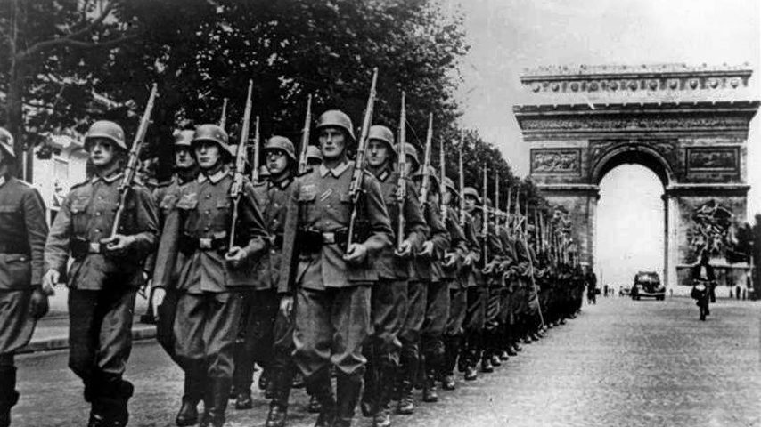
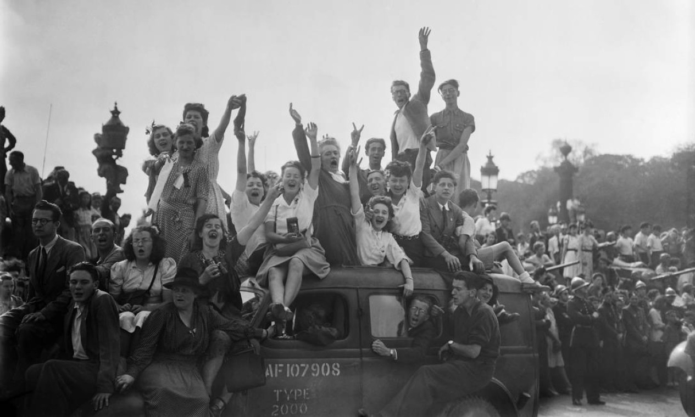
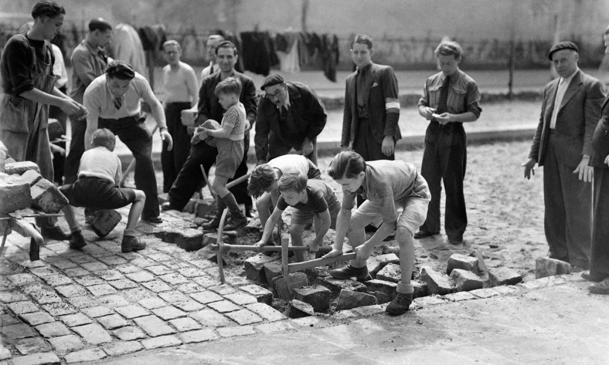

Na Segunda Guerra Mundial, a França enfrentou uma das fases mais sombrias de sua história moderna. Em setembro de 1939, a Alemanha nazista, sob o comando de Adolf Hitler, invadiu a Polônia, dando início ao conflito. Em maio de 1940, as tropas alemãs lançaram a Blitzkrieg, uma estratégia militar de guerra-relâmpago, e invadiram a França. A força alemã rapidamente atravessou as Ardenas, contornando as defesas francesas e aliadas, levando a uma rápida derrota das forças francesas.

Após a rápida derrota, a França assinou um armistício com a Alemanha em junho de 1940. A parte norte da França ficou sob ocupação militar alemã, enquanto a parte sul foi governada por um regime colaboracionista conhecido como o Governo de Vichy, liderado pelo marechal Philippe Pétain. O Governo de Vichy foi responsável por colaborar com os nazistas e implementar políticas que prejudicavam a população judaica e perseguia a resistência interna.
Apesar da derrota e da ocupação alemã, muitos franceses se recusaram a aceitar a subjugação nazista. A resistência francesa, conhecida como a Résistance, foi um movimento clandestino que operava em todo o país, lutando contra a ocupação alemã e o governo colaboracionista de Vichy. A Résistance realizava atividades de sabotagem, espionagem e distribuição de informações para os Aliados.
A França Livre e o Fim da Guerra
Enquanto uma parte da França estava sob controle nazista, Charles de Gaulle, um oficial militar francês, estabeleceu um governo no exílio conhecido como a França Livre em Londres. De Gaulle liderou a resistência francesa no exterior e apelou à população francesa para se unir à luta contra a ocupação alemã.
Os Aliados ocidentais, liderados pelo Reino Unido e os Estados Unidos, planejaram e realizaram a invasão da Normandia, também conhecida como o Dia D, em 6 de junho de 1944. Essa operação crucial permitiu que as forças aliadas desembarcassem na França ocupada e iniciassem a libertação do país.
Com a ajuda dos Aliados, a resistência interna e a luta contínua da França Livre, as forças alemãs foram gradualmente expulsas do território francês. Paris foi finalmente libertada em 25 de agosto de 1944, após uma série de batalhas e combates em toda a cidade. A libertação da França foi um momento de alegria e alívio para os franceses, marcando o fim da ocupação nazista.

Consequências e Reconstrução
Após o fim da Segunda Guerra Mundial, a França enfrentou um período de reconstrução e recuperação. O país teve que lidar com os danos causados pela guerra, além de enfrentar questões sobre a colaboração com os nazistas durante o regime de Vichy. O julgamento de colaboradores e a busca pela reconciliação interna foram desafios significativos que a França enfrentou após a guerra.

A Segunda Guerra Mundial teve um impacto profundo na França e moldou sua história e identidade nacional. A experiência da ocupação nazista e a resistência interna destacaram a importância dos valores da liberdade e da luta pela justiça. A França desempenhou um papel fundamental na fundação da União Europeia, uma organização que busca promover a paz, a cooperação e a prosperidade na região, como forma de evitar conflitos futuros.
A participação da França na Segunda Guerra Mundial foi um capítulo complexo e significativo em sua história. A ocupação alemã e a colaboração de Vichy foram momentos sombrios, mas a resistência francesa e a libertação do país mostraram a determinação e a resiliência do povo francês. A França emergiu da guerra com cicatrizes, mas também com um senso de unidade e propósito, buscando construir um futuro de paz e cooperação com outras nações europeias.